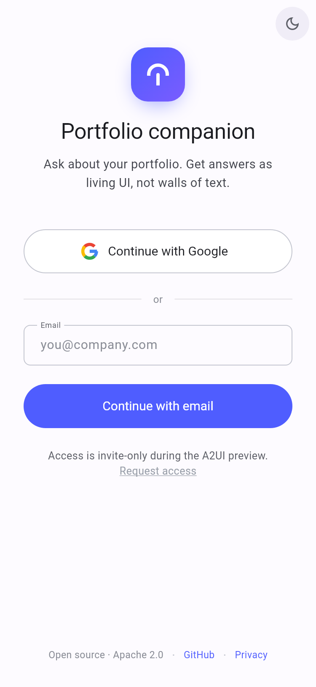
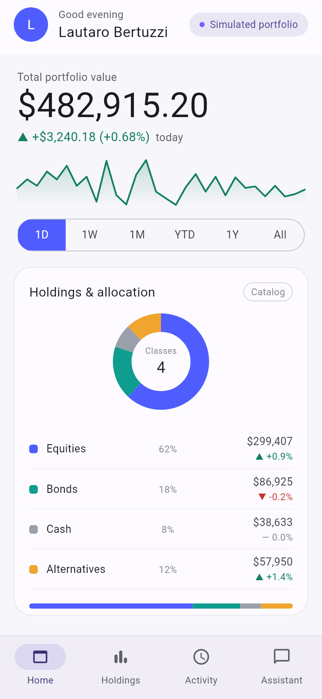
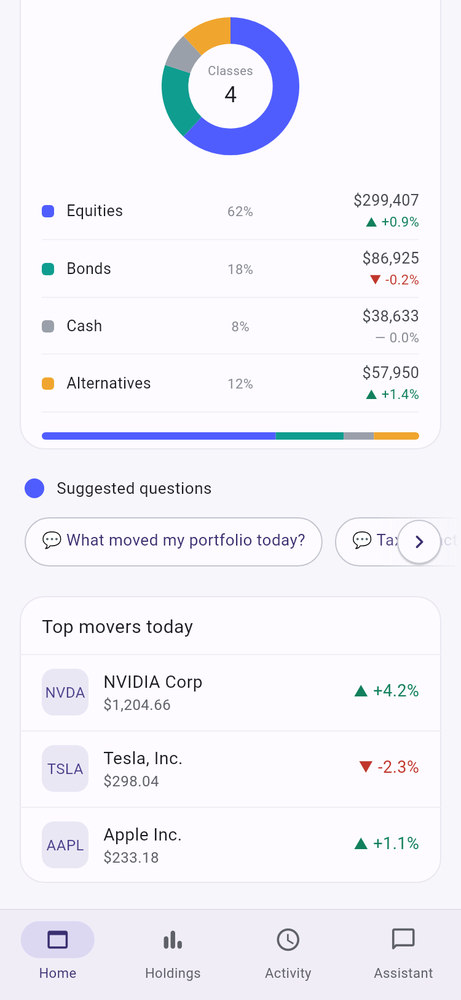
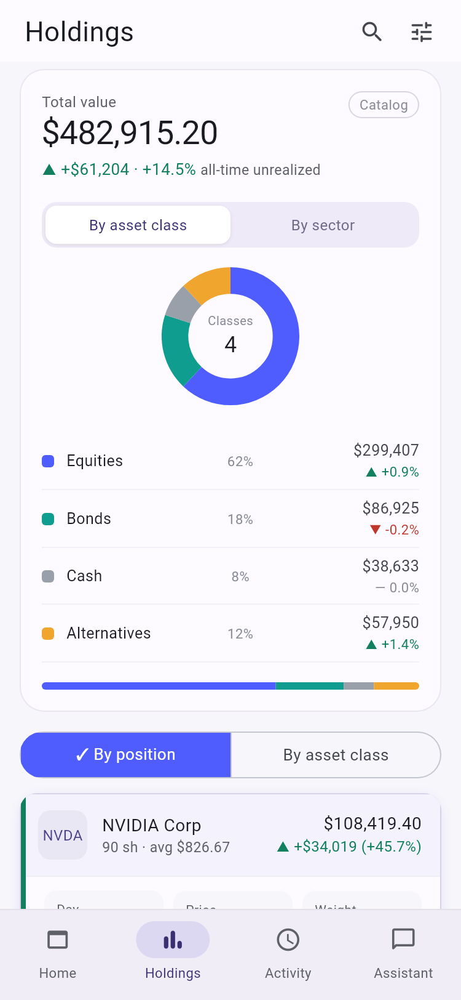
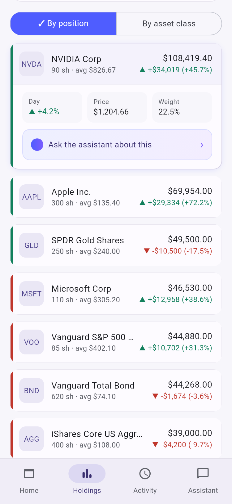
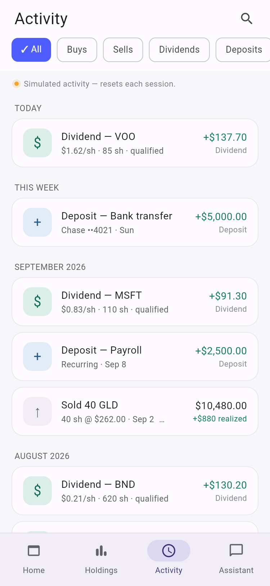
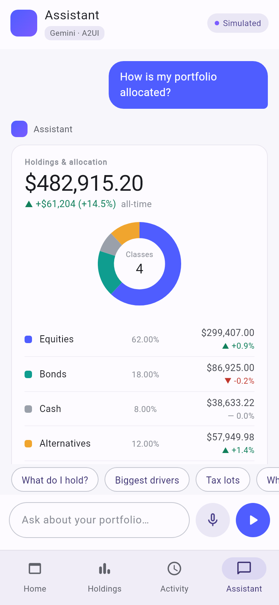

A user manual for the A2UI finance showcase — an assistant that answers portfolio questions by composing interface, not paragraphs.
local+5cb9a40Part one · The idea
Ask a normal question about a portfolio — “how is my money split up?”, “what moved today?”, “which lots would I sell?” — and most assistants answer with a paragraph. You then have to trust a number you cannot inspect, sitting in a sentence you cannot click.
This application answers differently. It replies with the actual interface: a donut of your allocation, a table of your lots, a breakdown of what moved. The same components the rest of the app is built from, assembled on the spot in response to what you asked.
That is what “A2UI” means here — an agent that speaks in user interface. It is a working reference application, open source under Apache 2.0, and the four screens in this manual are the whole product.
The assistant chooses, it does not invent. It picks from a fixed, published set of components and fills them in. It cannot draw something the app was not built to draw, which is why nothing ever arrives looking broken or improvised.
The assistant never does the arithmetic. Every figure on screen is calculated by the system and handed to the assistant already written out. The assistant decides what to show you; the numbers come from code that is tested. A language model is not permitted to add anything up.
Every figure in this application is generated from a fixed, repeatable recipe. It is a convincing portfolio and it is not a real one.
| What you see | What it actually is |
|---|---|
| Prices and market moves | Simulated. There is no market-data feed and no pricing licence behind this app. |
| Balances, holdings, tax lots | Simulated. Generated from a fixed seed, so the demo shows the same figures every time. |
| Activity — dividends, deposits, sales | Simulated, and reset for each session. |
| Buying or selling anything | Does not exist. There is no broker connection and no way to move money. |
| The assistant, the components, the app itself | Real, and deployed. What you are evaluating is the interaction, and that part is genuine. |
The application says so on screen rather than leaving it to a footnote. A Simulated portfolio badge sits beside your name on Home, the Activity list is headed “Simulated activity — resets each session”, and the assistant carries a Simulated badge of its own.
Nothing this application displays is a recommendation, and nothing in it can be acted on. It is a demonstration of how an assistant and an interface can work together, using invented money.
The choice is deliberate. A fixed portfolio means the demo behaves identically for every viewer, and it means a screenshot in this manual can be checked against the running app rather than aged out by a market that moved overnight.
Part two · Walkthrough

Two ways in, and the app is honest about which one is available to you.
Continue with Google is the normal route for a hosted environment.
Continue with email takes an address and lets you straight through. This is the path to use for a local or demo build, where there is no Google project configured; the app says so rather than showing a button that cannot work.
Access is invite-only during the preview, and Request access under the buttons is how somebody without an account asks for one.
Each portfolio belongs to the address that signed in, so two people in the same demo do not see each other's figures.
After signing in you are inside a four-tab application. The bar at the bottom is the whole of the navigation.
| Tab | The question it answers |
|---|---|
| Home | How am I doing right now, in one screen? |
| Holdings | What exactly do I own, and how is it grouped? |
| Activity | What has happened to this portfolio lately? |
| Assistant | Anything you can put into words. |
A round moon or sun button in the corner of the first screen switches the whole app between light and dark. Every screen in this manual is shown in light mode; the dark one is the same layout with a palette the designers measured separately.
Home is built to be read in about five seconds and then left alone. It opens on the one figure most people want, and everything under it is context for that figure.


| Element | What it tells you |
|---|---|
| Total portfolio value | Everything, added up, with today's change underneath in green or red. |
| The sparkline | The shape of the period, drawn small. It is a picture of the trend, not a chart to read values off. |
| 1D · 1W · 1M · YTD · 1Y · All | The period the line and the change above it describe. Tap one and both update. |
| Holdings & allocation | Your money split by asset class — equities, bonds, cash, alternatives — as a ring, then as a list with each class's value and move. |
| Suggested questions | Shortcuts. Tapping one carries that question into the Assistant with it, so you never have to start from a blank field. |
| Top movers today | The handful of positions responsible for most of the day's change. |
The colour language is consistent everywhere in the app and worth learning once: green with an up triangle is a gain, red with a down triangle is a loss, and a grey dash means nothing moved.
Home tells you how much. Holdings tells you what, and lets you look at the same money two different ways without leaving the screen.


Each row carries the ticker, the name, how many shares and what you paid on average, then the position's value today and what it has gained or lost since you bought it. The coloured edge down the left repeats that in a glance.
Tap a row and it expands with three more facts — the move today, the current price, and how much of the whole portfolio this one position represents. That last number, Weight, is the one people usually came looking for.
Inside the expanded row is Ask the assistant about this. It hands the position straight to the Assistant tab, already framed as a question, so you do not have to describe what you are looking at.
| Control | What it does |
|---|---|
| By asset class / By sector | Regroups the ring and the breakdown above. Same money, two ways of cutting it. |
| By position / By asset class | Regroups the list below into individual holdings or into buckets. |
| Search | Finds a holding by ticker or name. |
| Filter | Narrows the list down to a subset of what you own. |

Activity is the portfolio's diary: every dividend, deposit, purchase and sale, newest first.
Entries are grouped under plain headings — Today, This week, then by month — rather than a wall of dates, so the recent past reads at a glance.
Each entry says what happened, and the second line carries the detail that makes it checkable: the rate per share and how many shares for a dividend, the account and day for a deposit, the price and the gain realised for a sale.
The chips across the top filter the list: All, Buys, Sells, Dividends, Deposits. The magnifying glass searches it.
The amber line under the chips is the app being straight with you: “Simulated activity — resets each session.” Nothing here happened, and nothing you do here can make it happen.
The first three tabs are a good portfolio app. The fourth is the reason this one exists.

Type a question into the field at the bottom and send it. Or tap the microphone and dictate it — and if the browser will not allow dictation, the app tells you so instead of quietly doing nothing.
You can also arrive here from elsewhere: a suggested question on Home, or Ask the assistant about this on a position, both open this tab with the question already written.
Your question appears as a bubble. Under it, the assistant replies with a live component — in the example, the allocation ring and breakdown, the same one Home and Holdings use, filled with this portfolio's figures.
Underneath sit follow-up chips. They are the assistant offering the obvious next questions, so a conversation can be three taps rather than three sentences.
The two badges in the header are worth pointing at during a demo. Gemini · A2UI names what is answering: Google's Gemini model, speaking through the A2UI protocol. Simulated repeats that the figures underneath are invented.
It is not writing HTML, and it is not designing a layout on the fly. It selects a component from a published catalog and fills in the options that component declares. Anything outside that catalog it simply cannot produce — which is why an answer never arrives malformed.
It is also not calculating. Every currency figure and every percentage in the component above was worked out by the system and handed over already formatted. The assistant copies them; it is not allowed to compute one.
This is an early preview of a genuinely new interaction, and it behaves like one. An answer takes a few seconds to assemble, and a question far outside the portfolio's subject will be answered less confidently than one inside it. Stay near the four topics above and the demo is reliable.
Part three · Why it matters
Set the portfolio aside for a moment. What is being demonstrated is a way of building software where the assistant and the interface are the same thing.
| What changes | Why it is worth something |
|---|---|
| An answer you can use | A paragraph about your allocation is something to read. A live allocation component is something to tap, sort, and carry on from. The answer is a starting point rather than an endpoint. |
| An answer you can check | Because the figures come from the system and not from the model, the number in the assistant's reply is the same number the Holdings tab shows. There are not two versions of the truth. |
| An answer that cannot be malformed | The assistant can only compose from a catalog of components that already exist and are already tested. The failure mode where a model invents a broken layout is removed by construction, not by careful prompting. |
| A product that grows in one place | A new chart is added once, on the server, and the assistant can use it immediately. There is no second piece of work on each client to catch up. |
| An interface that fits the question | Nobody has to predict, at design time, which of a hundred questions deserves its own screen. The screen is assembled when the question is asked. |
For the technically curious, the app carries its own proof of this: a built-in gallery, reachable from the Catalog button on the allocation card, listing every component this build can render. That list is generated from the server's own registry — it is the contract the assistant chooses from, shown live.
A demo is more persuasive when it says what it does not do.
| If you want to… | Go to |
|---|---|
| See the total and today's move | Home, at the top |
| Change the period of the chart | Home — the 1D / 1W / 1M / YTD / 1Y / All row |
| See the split by asset class or sector | Holdings — the toggle above the ring |
| Find one holding | Holdings — the magnifying glass |
| See a position's weight in the portfolio | Holdings — tap the row to expand it |
| Check a dividend or a deposit | Activity — filter to Dividends or Deposits |
| Ask anything at all | Assistant — type it, or tap the microphone |
| Ask about the holding you are looking at | Holdings — Ask the assistant about this |
| Switch to dark mode | The moon button on the sign-in screen |
Portfolio companion — user manual · Somnio Software with Google ·
Screens captured from build local+5cb9a40 on 22 September 2026 ·
Open source, Apache 2.0 · The portfolio shown throughout is simulated.